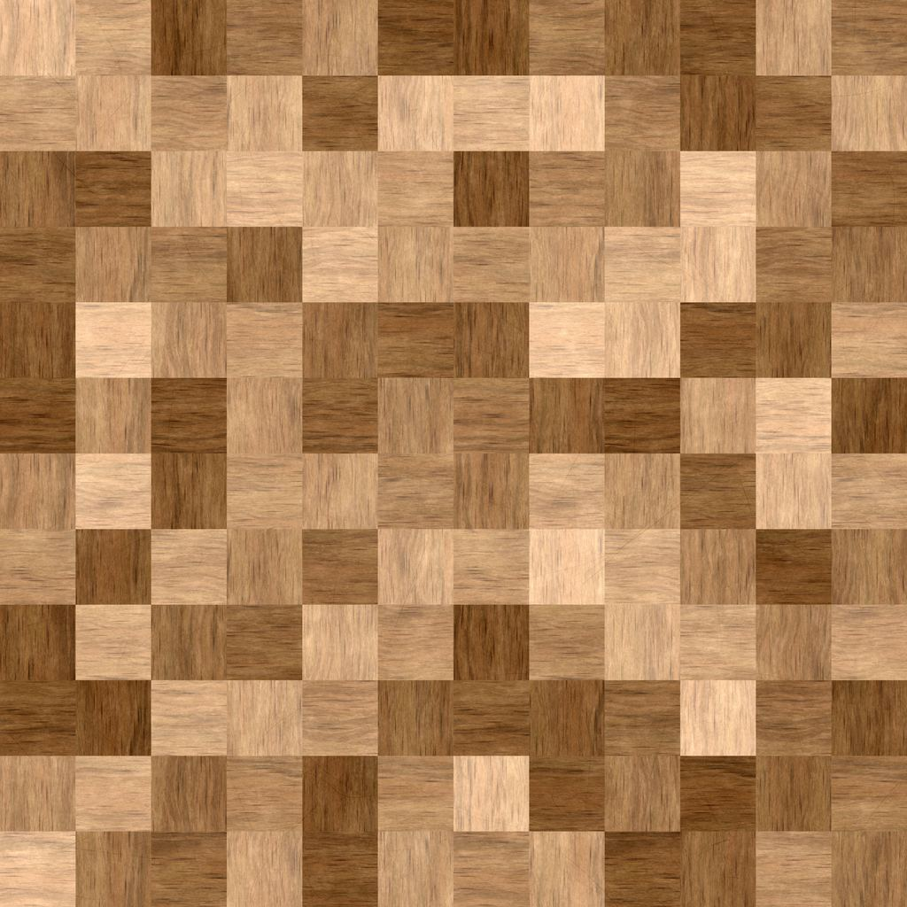

Floor look
Gray oak floor for a 10 by 12 kitchen
A 10 by 12 kitchen is about 120 square feet. With 10% waste, plan on about 132 square feet of gray oak flooring — roughly 7 boxes at 20 square feet per box. Check the coverage on your carton with the measure tool before you order.

About the gray oak look
Gray oak is oak grain with a cool gray or silvery stain. Light-to-mid grays hide dust and light pet hair well and suit modern rooms with white, black, or blue accents. Gray can read cold next to beige walls or yellow-toned wood cabinets, so check samples against whatever is staying in the room.
Styling gray oak in a 10 by 12 kitchen
Gray oak pairs with white, black, or navy cabinets and white or gray quartz; it can clash with beige granite or oak cabinets.
Kitchen notes
Kitchens get water, grease, and dropped pans. Choose a waterproof rigid core plank with tight click joints, and wipe spills instead of letting them sit at the seams. Cabinets and islands should stay on the subfloor with the floating floor installed up to them, not under them, so the floor can move. Leave the expansion gap at walls and appliance openings, slide the fridge out on a scrap of hardboard so its wheels don't gouge the planks, and plan a transition strip where the kitchen meets another floor.
Gray oak in a 10 by 12 kitchen: tips
- Gray oak hides flour and dust but shows coffee drips and tracked-in dirt in the lane between sink and stove; a washable runner there cuts down on mopping.
- Run the planks parallel to the longest wall or the main path into the kitchen; it looks more natural and simplifies cuts at the cabinets.
- Gray oak can pick up a blue cast in a north-facing kitchen; a gray sample with a slightly warm (greige) base avoids that.
What to buy for this kitchen
- Core: waterproof rigid core (SPC or WPC)
- Wear layer: 12 mil for most kitchens; 20 mil with dogs or heavy traffic
- Thickness: about 5–7 mm total; check that the dishwasher can still slide out
- Waste: 10%; cuts around the island and cabinet toe-kicks use most of it
- Finish: low-gloss finish with light texture; it hides dark scuffs better than a shiny surface